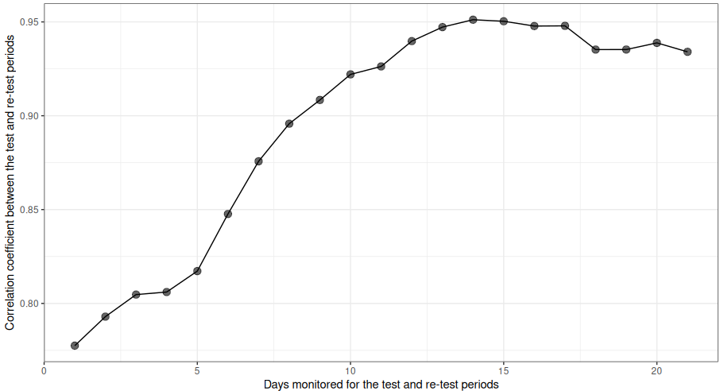

Test–retest reliability is critical for a cough detector’s clinical utility because it establishes whether the device produces stable, repeatable cough counts when the underlying clinical reality has not changed. If a cough detector cannot reliably generate similar results under the same conditions, its data cannot be trusted for clinical or research use.
Test–retest reliability answers the question: Does the device give similar cough counts today and tomorrow when the person’s cough has not truly changed?
If the counts fluctuate widely in stable conditions, the device is measuring noise, not cough. High test–retest reliability shows that the device’s outputs reflect the patient’s physiology, not random algorithmic or sensor variability.
Clinicians and researchers must detect real improvement or worsening. Reliable devices allow users to interpret:
A reduction in cough as a real response to treatment, not a random drop from device inconsistency.
A spike in cough as a true exacerbation, not an artifact.
Without test–retest reliability, it’s impossible to know whether observed differences are biologically meaningful.
Inconsistent measurements increase noise in datasets, which:
High test–retest reliability means:
- Lower variance
- Smaller confidence intervals
- Smaller sample size
- Cleaner detection of clinically important differences
Test–retest reliability is essential because a cough detector must produce stable cough counts when the patient hasn’t changed—otherwise it cannot support clinical interpretation, evaluate treatments, or reliably monitor disease over time.
The below image shows test / re-test consistency (y-axis, correlation in cough rates between the two periods, as measured by the Pearson’s Correlation Coefficient) as a function of number of days of the test / re-test period (x-axis). This analysis was carried out in a population with no intervention (ie, expected clinical state = static).
